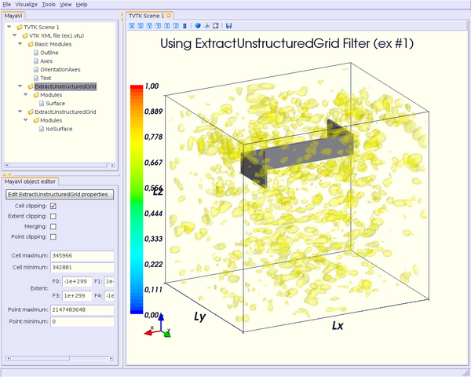
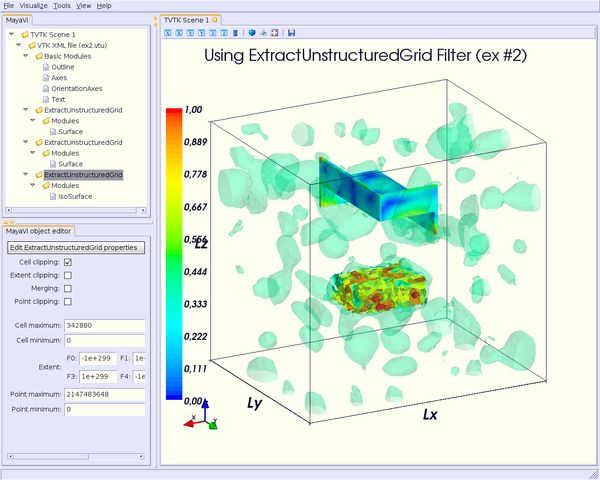
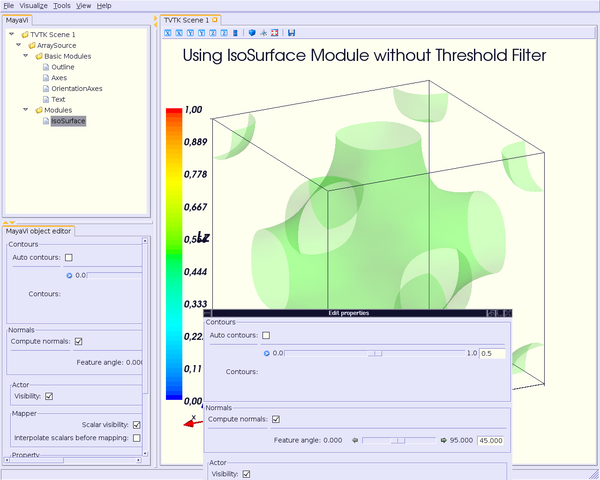
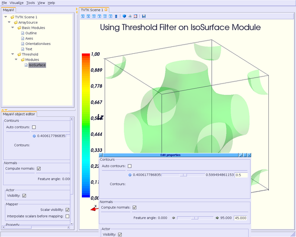
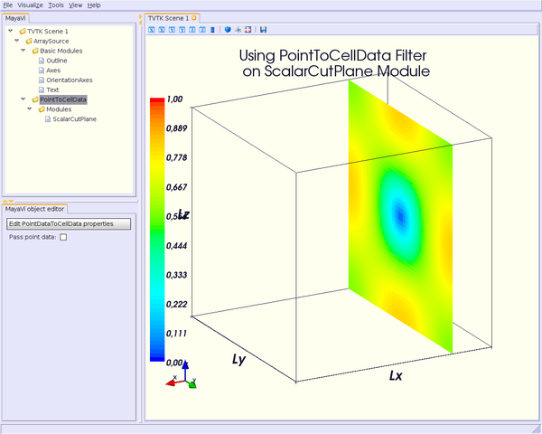

TableOfContents
Well, until now, examples above are quite simple: scalars or vectors data are presented in the “vaccum”, i.e. there is not object or material or whatsoever.
In others words, how can one display some object, say a metallic parallellepiped, for example, in a scalars or vectors field ?
The first filter you will be presented here deals with this problem.
For this example, we suppose several hypotheses:
* the mesh of the volume data is made of 76x60x72 cubic cells (8 vertices); thus, the VTK object cell used for the "vaccum" is called VTK_HEXAHEDRON (#12). Cell ids begins at 0 and ends at #342880.
* a metallic parallellepiped is immersed in a EM field spreading over the whole volume data ; this object is made of faceted cells (4 vertices), called VTK_QUAD (#9) cells in VTK denomination. These faceted cells are used here because of the null EM field within the parallellepiped. Cell ids begin at #342881 and end at #345966.
* as there are different kinds of cells, the !UnstructuredGrid data set must be used (see `http://www.vtk.org/pdf/file-formats.pdf <http://www.vtk.org/pdf/file-formats.pdf>`__ to know how !UnstructuredGrid files must be written, VTK cells syntax, etc).
To display the metallic parallellepiped as a separate object from the vaccum, you have to extract the cells corresponding to this object. Thus, you will be able to display this object using the Surface module for example.
First, import !ExtractUnstructuredGrid filter and Surface module, as usual:
from enthought.mayavi.modules.surface import Surface
from enthought.mayavi.filters.extract_unstructured_grid import ExtractUnstructur
edGrid
then
### for the metallic parallellepiped
script.engine.current_object = src # current object must be set to the source
eug1 = ExtractUnstructuredGrid()
script.add_filter(eug1)
eug1.filter.cell_clipping = True
eug1.filter.cell_minimum = 342881
eug1.filter.cell_maximum = 345966
s = Surface() # the metallic is displayed using Surface mo
dule
eug1.add_module(s) # the module must be added to the current fi
lter
s.actor.mapper.scalar_visibility = False
s.actor.property.color = (0.509804, 0.5098040, 0.5490196) # grey color for the m
etallic parallellepiped
### we need also extract the required cells for and only for the vaccum
script.engine.current_object = src # current object must be set to the source
eug2 = ExtractUnstructuredGrid()
script.add_filter(eug2)
eug2.filter.cell_clipping = True
eug2.filter.cell_minimum = 0
eug2.filter.cell_maximum = 342880
### here, we can display the EM field using ScalarCutPlane/VectorCutPlane,
### Surface, Vectors modules as usual
.../...
This should look like this:
For this first example, there was only one object, and it was faceted.
Now, say we have a second object, not metallic but dielectric (so the EM field within it should not be null). Thus we have to use some 3D cells, as VTK_HEXAHEDRON cells (cell ids go from #345967 to #349094). We also want to display the field on the surface on the metallic object and in the dielectric object.
### for the metallic parallellepiped
script.engine.current_object = src
eug1 = ExtractUnstructuredGrid()
script.add_filter(eug1)
eug1.filter.cell_clipping = True
eug1.filter.cell_minimum = 342881
eug1.filter.cell_maximum = 345966
s = Surface()
eug1.add_module(s)
s.actor.mapper.scalar_visibility = True # scalar field on the surface
### for the dielectric parallellepiped
script.engine.current_object = src
eug2 = ExtractUnstructuredGrid()
script.add_filter(eug2)
eug2.filter.cell_clipping = True
eug2.filter.cell_minimum = 345967
eug2.filter.cell_maximum = 349094
s = Surface()
eug2.add_module(s)
s.actor.mapper.scalar_visibility = True # scalar field set to on
s.enable_contours = True # in the volume
### we need also extract the required cells for and only for the vaccum
script.engine.current_object = src # current object must be set to the source
eug3 = ExtractUnstructuredGrid()
script.add_filter(eug3)
eug3.filter.cell_clipping = True
eug3.filter.cell_minimum = 0
eug3.filter.cell_maximum = 342880
.../...
This should render this:
Using !ExtractGrid filter is easier, because it works (only) on structured grids: you only have to set min/max values for x, y, z coordinates. Thus, you can cut a subvolume of your data. You can also apply a ratio on each coordinates, to decrease the cells number.
Import, as usual, the required modules and/or filter:
from enthought.mayavi.modules.surface import Surface
from enthought.mayavi.filters.extract_grid import ExtractGrid
then you can set filter’s limits as:
eg = ExtractGrid()
script.add_filter(eg)
eg.x_min, eg.x_max = 10, 40
eg.y_min, eg.y_max = 10, 40
eg.z_min, eg.z_max = 10, 40
# eg.x_ratio = 2
# eg.y_ratio = 2
# eg.z_ratio = 2
# same example using Surface module
s = Surface()
s.enable_contours = True
s.contour.auto_contours = True
s.contour.number_of_contours = 10
s.actor.property.opacity = 0.2
script.add_module(s)
s.contour.minimum_contour = 0
s.contour.maximum_contour = 1
s.module_manager.scalar_lut_manager.data_range = [0, 1]
Using this filter, you can consider scalars values contained in a specific range.
Suppose that your scalars data spread from 0 to 1, but you are only interested by the values in the range [0.4, 0.6] and you want to play with the slidebar of the !IsoSurface module within this range, around 0.5. By default, min & max values of the slidebar will be set to 0 & 1, because of your data range:
To play more accurately with the slidebar of the !IsoSurface module, you have to set min & max values to the required values, i.e. 0.4 & 0.6. Thus, if you want to see your scalars data around 0.5, you can set the slidebar from 0.4 to 0.6 more easily than in the case where slidebar goes form 0 to 1.
The Threshold filter can help you to do this.
Begin to import the module and the filter first:
from enthought.mayavi.modules.iso_surface import IsoSurface
from enthought.mayavi.filters.threshold import Threshold
then, set the threshold values:
thh = Threshold()
script.add_filter(thh)
thh.lower_threshold = 0.4
thh.upper_threshold = 0.6
isosurf = IsoSurface()
thh.add_module(isosurf)
isosurf.contour.contours = [0.5]
isosurf.compute_normals = True
isosurf.actor.property.opacity = 0.2
isosurf.module_manager.scalar_lut_manager.data_range = [0, 1]
and you’re done !
This should look like this:
You can notice on the two previous figures that the Threshold module approximates bounds to the nearest values (there are not strictly equal to 0.4 & 0.6).
Generally, data are interpolated between each point. Thus, they look like nicer.
But maybe in some case, you don’t want them to be interpolated, and see the data “as they are”: they are not displayed as points, but as cells. In this case, you can use the !PointToCellData filter.
Let’s see again the example using the !ScalarCutPlane module, and import the !PointToCellData filter:
from enthought.mayavi.modules.scalar_cut_plane import ScalarCutPlane
from enthought.mayavi.filters.point_to_cell_data import PointToCellData
then add the !ScalarCutPlane module “above” the !PointToCellData filter, as usual:
ptocd = PointToCellData()
script.add_filter(ptocd)
scp = ScalarCutPlane()
ptocd.add_module(scp)
scp.implicit_plane.normal = (1, 0, 0)
scp.implicit_plane.origin = (10, 25, 25)
scp.implicit_plane.widget.enabled = False
scp.actor.property.diffuse = 0.0
scp.actor.property.ambient = 1.0
scp.actor.property.opacity = 1.0
scp.module_manager.scalar_lut_manager.data_range = [0, 1]
Thus, you can see your data on each cell and not as points (compare to the first figure showing the use of the !ScalarCutPlane module):
You can use the !WarpScalar filter to warp a 2D surface for example. See [:Cookbook/MayaVi/Examples: Example using mlab (surf_regular_mlab.py)].